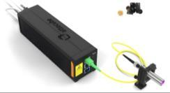

Measurement chain to physical intervention.
Closed-loop feedback control development
Instrument state, measurement chain and control logic.
A technical entry point to the detector, interferometric, thermal and active-optics evidence gathered between 2023 and 2026. Values shown here are report-derived snapshots; they are not live telemetry and do not imply real-time control authority.
Slow thermal authority with bounded optical trim.
Sealed airflow prototype remains under validation.
01 SYSTEM TOPOLOGY
Measurements remain separate until the supervisory decision.
Detector displacement, optical-path length and environmental telemetry are different observables. The controller interprets them together but does not report one as a substitute for another.
- ThAr spectrum recorded as CCD/FITS frames.
- Phase correlation estimates dX, dY and radial error.
- IDS3010, PT104, BME680 and LK220 channels provide context.
- Supervisory logic applies validity gates and actuator limits.
- TEC carries slow drift; active optics trims bounded residuals.
- The next exposure verifies the resulting detector state.
02 INSTRUMENTATION
The dashboard reflects the hardware actually used.
Each subsystem has one declared role. Expanding a module shows the measurement or actuation boundary used in the research record.
OPLIDS3010 interferometer
Independent optical-path-length metrology for environmental and thermo-optical diagnosis. OPL is not treated as detector motion.
MEASURES / relative optical-path changeXYCCD + ThAr tracking
Detector frames provide the spectral image used for centroid and phase-correlation estimates of dX and dY.
MEASURES / detector-plane displacementT4PT104 four-channel map
Platinum-resistance temperature channels resolve camera-region, cooling-path and room/AC gradients hidden by a single sensor.
MEASURES / spatial thermal stateENVBME680 environment
Local temperature, pressure and humidity context supports refractive-index and environmental disturbance interpretation.
MEASURES / ambient contextTECThermo-electric control
The Peltier/TEC path is the slow, sustainable actuator assigned to persistent drift rather than rapid image excursions.
ACTUATES / coarse thermal correctionAOActive-optics guiding unit
A calibrated two-axis optical stage provides bounded fine trim, with range monitoring and thermal unloading logic.
ACTUATES / residual image correction03 CONTROL ALLOCATION
Two actuators operate on different time scales.
Slow loop
TEC / Peltier
- Purpose
- Persistent drift
- Authority
- Coarse / sustainable
- Constraint
- Thermal delay and settling
Fast trim
Active optics
- Purpose
- Residual image motion
- Authority
- Fine / bounded
- Constraint
- Finite travel and cross-coupling
Validity layer
Sensor agreement
- Inputs
- dX/dY · OPL · temperature
- Purpose
- Reject invalid correction
- Constraint
- No single-channel causality claim
04 RESEARCH WORKSPACES
Move from overview to evidence without losing context.
MEASURED PERFORMANCEFeedback results
V17 endurance and V18 phase-correlation results.
PHYSICAL DIAGNOSISThermal chainV19–V24 environmental, cooling and camera evidence.
CURRENT HARDWAREV25 prototypeSealed airflow design and pending validation sequence.
TRACEABILITYRuntime ledgerAudited intervals, definitions and source qualification.
DOCUMENT RECORDEvidence libraryReports, presentations and chronological research record.
PROGRAMME HISTORY2023–2026 timelineHow each experiment changed the following question.
